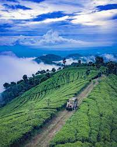

Menu
- About
- Blog
- Gallery
Recommendation
Newest Update
Get to Know Penataran Temple
Some tourists do not know that Blitar City also has a religious vacation spot like temples.
The fact is the region has the famous Penataran Temple!
As the name suggests, it is located in Penataran Village and belongs to Nglegok Sub-District.
This Hindu Temple has been there since the presence of Kediri Kingdom,
after all. It even lasted until the reign of Majapahit Kingdom!
These days, the local government includes it as one of their recommended tourist sites, as well.
Visitors usually conduct photography and learn history about it.
As an alternative, the site is comfy enough for relaxation during weekends!
A Place to Remember
Kebun Teh Sirah Kencong
Sirah Kencong Blitar menyuguhkan pemandangan kebun teh yang sangat indah,
warna hijau perkebunan menjadi pemandangan yang menyegarkan mata.
Tidak hanya itu, tentunya juga sebagai spot selfie yang paling digemari di sana.
Terdapat juga air terjun di kawasan tersebut, yang tentunya juga menjadi wahana yang menyegarkan
buat kamu yang senang bermain air. Namun jika tidak, kamu bisa hanya menikmati
pemandangan air terjun yang sangat eksotis.
